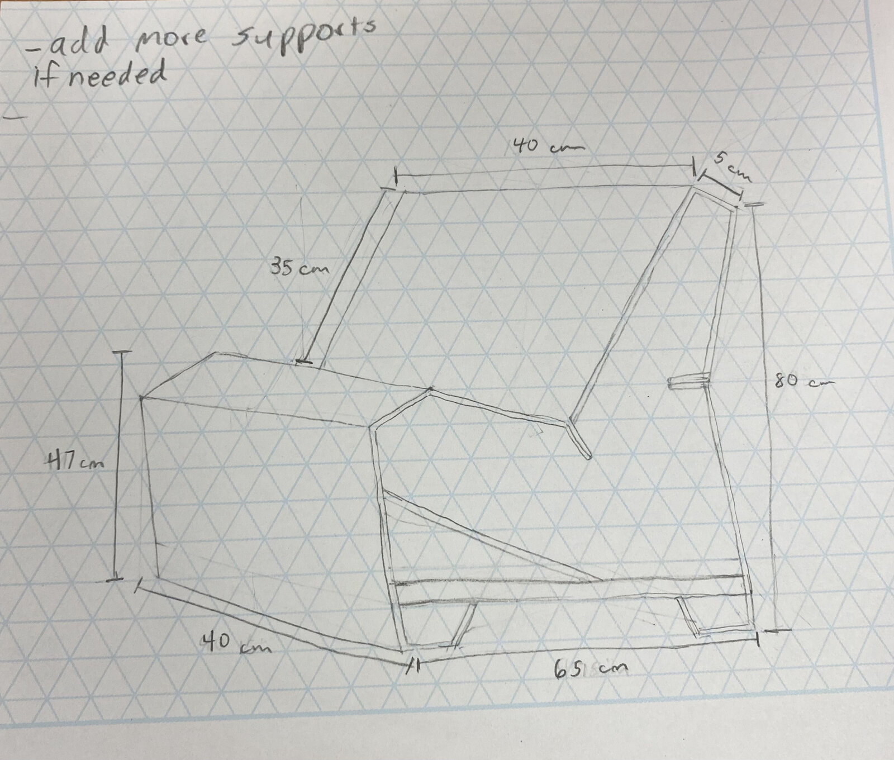
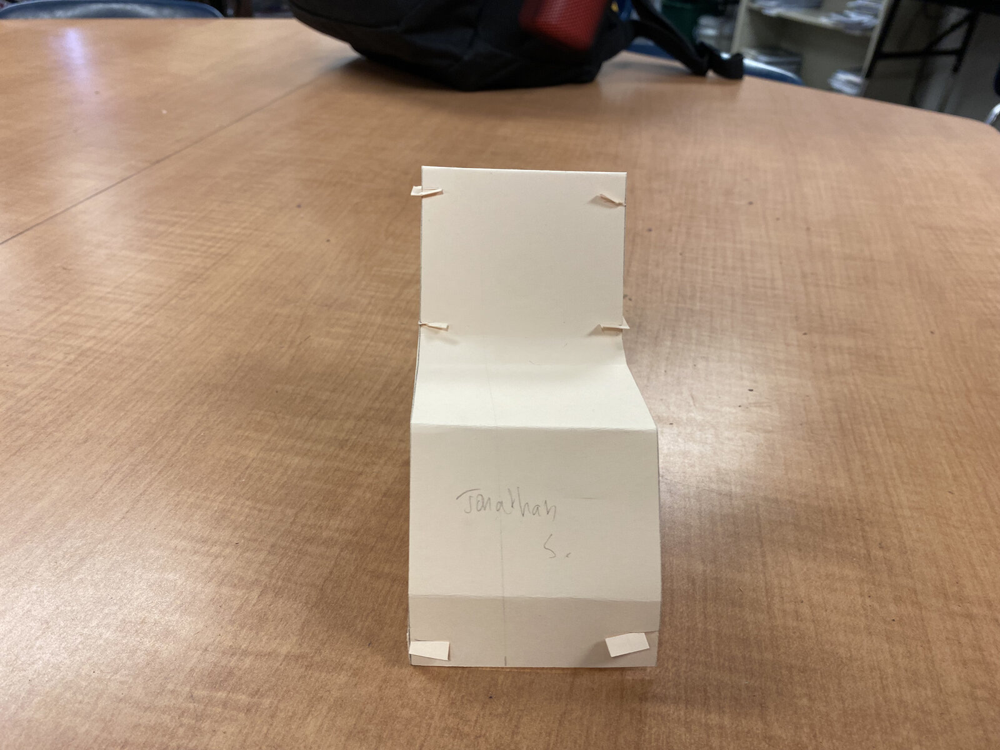
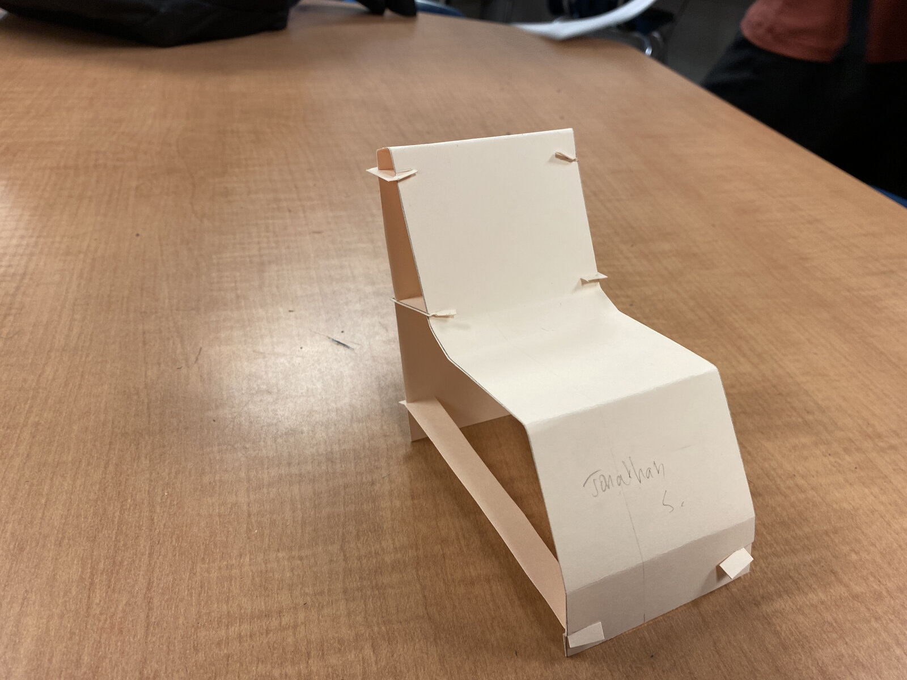

Overview
Humans come in all shapes, sizes, and abilities, so ergonomics and human-centered design are important considerations when designing chairs people will spend long periods sitting in. My team reviewed anthropometric tables and calculated the required dimensions for the chair, then brainstormed three possible chair concepts and used a decision matrix to select the top design.
View full presentation slides →
Concept Sketches
We sketched several chair concepts by hand, working through rough proportions before narrowing in on dimensions pulled from anthropometric tables. Each concept explored a different structural approach — from a splayed-leg "spider" design to a wider, more enclosed "comfy" form.
Final Design
After comparing concepts with a decision matrix, we finalized a single design and produced a fully dimensioned sketch to guide construction.

Prototyping
After finalizing an annotated sketch of the design, we built a small-scale prototype using cardstock to verify the concept before committing to a full-size version. Once validated, we built a full-size model of the chair using cardboard.


Cardstock prototype used to verify the design before the full-size cardboard build.
What I Learned
This project taught me how to analyze design constraints and produce an effective design using the materials and tools we were given. I also learned how to problem-solve — our group ran into several difficulties during construction, and together we worked through them to reach a working solution.
Human-Centered Approach
We learned how to design around the dimensions and characteristics of the human body, using anthropometric tables to create a chair suitable for a wide range of users rather than a single body type.